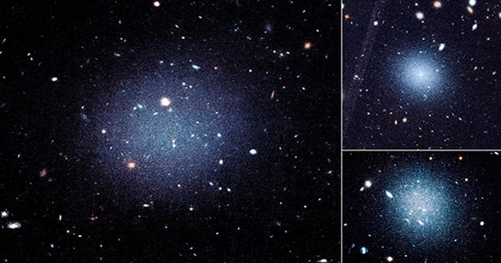

Тройка «призрачных» галактик намекает на то, что такое темная материя — и нет
Столкновение могло оставить эти галактики без темной материи.
Это создает проблемы для альтернативных теорий гравитации.
Сообщение Triplet of ‘Ghostly‘ Galaxies Hints at What Dark Matter Is — and Isn 't first appeared on Quanta Magazine